Normal Distribution Word Problems
1If X is a random variable with a distribution of N(μ, σ), find:
p(µ−3σ ≤ X ≤ µ+3σ)
2Calculate the value of a in a normal distribution with a mean of 4 and a standard deviation of 2 for which:
P(4−a ≤ x ≤ 4+a) = 0.5934
3In a city, it is estimated that the maximum temperature in June is normally distributed with a mean of 23º and a standard deviation of 5°. Calculate the number of days in this month in which it is expected to reach a maximum of between 21° and 27°.
4The mean weight of 500 college students is 70 kg and the standard deviation is 3 kg. Assuming that the weight is normally distributed, determine how many students weigh:
1. Between 60 kg and 75 kg.
2.More than 90 kg.
3.Less than 64 kg.
4.Exactly 64 kg.
5.64 kg or less.
5It is assumed that the test results for a class follow a normal distribution with a mean of 78 and a standard deviation of 36.
1. What is the probability of a student obtaining the a grade higher than 72?
2.Calculate the percentage of students who have scores that are at least five points higher than the score that marks the border between pass and fail (a failing grade is defined as 25% of the tests with the lowest scores) .
3.If you know that a student's grade is greater than 72, what is the probability that it is greater than 84?
6An IQ test shows that the scores follow a distribution of N(65, 18). It is desirable to arrange the participants into three groups (low intelligence, average intelligence and high intelligence) so that 20% of the partipants are filled under the first group, 65% in the second and 15% in the third. What are the scores that differentiate each intelligence group from one another?
7Several intelligence tests follow a normal distribution with a mean of 100 and a standard deviation of 15.
1. Determine the percentage of the population that would obtain a score between 95 and 110.
2. What interval centered at a score of 100 contains 50% of the population?
3. For a population of 2,500, how many are expected to have a score above 125?
8In a particular city, one in three families have a phone in their home. If 90 families are chosen at random, calculate the probability that at least 30 of them will have a phone.
9Each of the 200 questions in a test has a right and wrong answer. A passing grade is defined as a score greater than 110 correctly answersed questions. Supposing that the answers are entered at random, calculate the probability of passing the examination.
10A study has shown that, in a certain neighborhood, 60% of households have at least two TVs. In this same area, 50 households are randomly selected for a study.
1. What is the probability that at least 20 of those households have at least two TVs?
2. What is the probability that between 35 and 40 households have at least two TVs?
1
If X is a random variable with a distribution of N(μ, σ), find:
p(µ−3σ ≤ X ≤ µ+3σ)
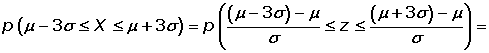
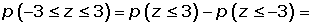
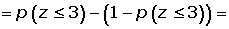
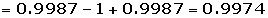
Approximately 99.74% of the X values are less than three standard deviations from the mean.
2
Calculate the value of a in a normal distribution with a mean of 4 and a standard deviation of 2 for which:
P(4−a ≤ x ≤ 4+a) = 0.5934
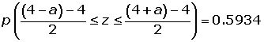
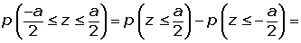
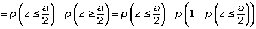
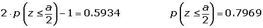
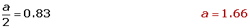
3
In a city, it is estimated that the maximum temperature in June is normally distributed with a mean of 23º and a standard deviation of 5°. Calculate the number of days in this month in which it is expected to reach a maximum of between 21° and 27°.
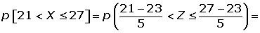
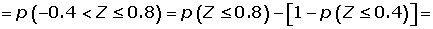
4
The mean weight of 500 college students is 70 kg and the standard deviation is 3 kg. Assuming that the weight is normally distributed, determine how many students weigh:
1. Between 60 kg and 75 kg.
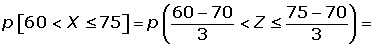
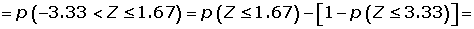
2.More than 90 kg.
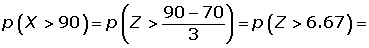
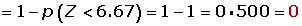
3.Less than 64 kg.
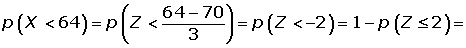
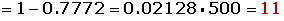
4.Exactly 64 kg.
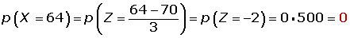
5.64 kg or less.
5
It is assumed that the test results for a class follow a normal distribution with a mean of 78 and a standard deviation of 36.
1. What is the probability of a student obtaining the a grade higher than 72?
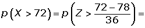
2.Calculate the percentage of students who have scores that are at least five points higher than the score that marks the border between pass and fail (a failing grade is defined as 25% of the tests with the lowest scores) .
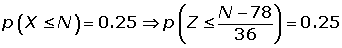
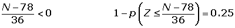
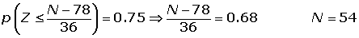
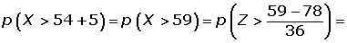
3.If you know that a student's grade is greater than 72, what is the probability that it is greater than 84?
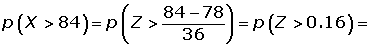
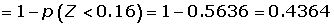
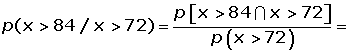
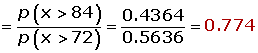
6
An IQ test shows that the scores follow a distribution of N(65, 18). It is desirable to arrange the participants into three groups (low intelligence, average intelligence and high intelligence) so that 20% of the partipants are filled under the first group, 65% in the second and 15% in the third. What are the scores that differentiate each intelligence group from one another?
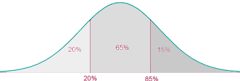
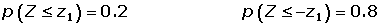
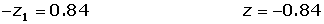
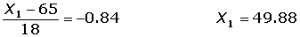
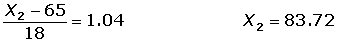
Low intelligence up to 49
Average intelligence between 50 and 83.
High intelligence starting from 84 points
7
Several intelligence tests follow a normal distribution with a mean of 100 and a standard deviation of 15.
1. Determine the percentage of the population that would obtain a score between 95 and 110.
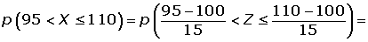
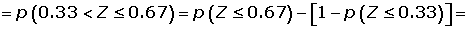
2. What interval centered at a score of 100 contains 50% of the population?
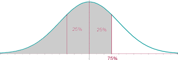
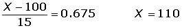
3. For a population of 2,500, how many are expected to have a score above 125?
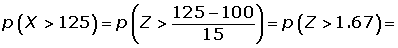
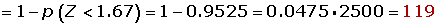
8
In a particular city, one in three families have a phone in their home. If 90 families are chosen at random, calculate the probability that at least 30 of them will have a phone.
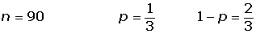
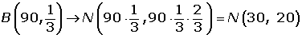
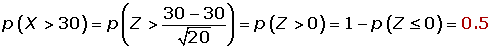
9
Each of the 200 questions in a test has a right and wrong answer. A passing grade is defined as a score greater than 110 correctly answersed questions. Supposing that the answers are entered at random, calculate the probability of passing the examination.
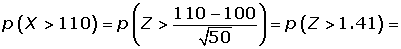
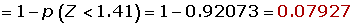
10
A study has shown that, in a certain neighborhood, 60% of households have at least two TVs. In this same area, 50 households are randomly selected for a study.
1. What is the probability that at least 20 of those households have at least two TVs?
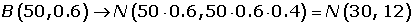
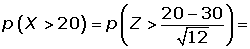
2. What is the probability that between 35 and 40 households have at least two TVs?
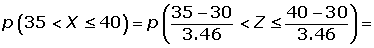